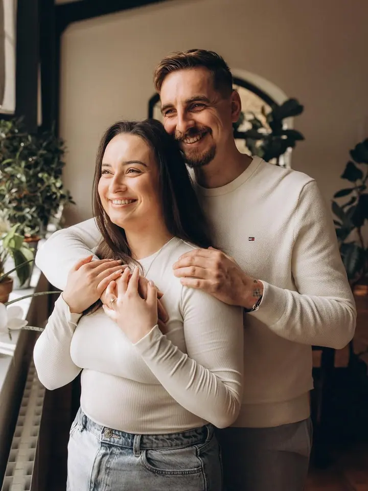

Svatební focení
Vaše svatba je oslavou lásky a emocí. Fotím ji lifestylově a v momentkách, aby fotky vyprávěly váš příběh i za mnoho let.

Jmenuji se Dáša Brychtová a fotím svatby, rodiny a páry i brandové fotografie s příběhem o vás. Specializuji se na lifestylovou a momentkovou fotografii, protože mě nejv…
Rezervovat termínFotografie je pro mě kouzlo. Dokáže zastavit přítomný okamžik a vrátit vám ho pokaždé, když se na fotku znovu podíváte. Proto se nesnažím o strojené pózy, ale o momentky, ve kterých poznáte sami sebe.


Zaměřuji se především na svatby, rodinné portréty a brandové focení. Ráda fotím i zvířata, takže pokud k vaší rodině patří pes, klidně ho vezměte s sebou. Každé focení je pro mě nová příležitost zachytit skutečné emoce.
Nejraději fotím venku, kde je prostor a volnost. Focení u vás doma má zase své kouzlo: děti jsou ve svém prostředí a fotky ukážou, jak vypadá váš obyčejný den. Mým cílem je, aby každá fotografie vyprávěla příběh, ke kterému se budete rádi vracet.
Co fotím
Vaše svatba je oslavou lásky a emocí. Fotím ji lifestylově a v momentkách, aby fotky vyprávěly váš příběh i za mnoho let.
Každá rodina má svůj příběh. Ráda fotím venku, ale i u vás doma, kde se děti cítí bezpečně a fotky působí opravdově.
Uvolněné focení ve dvou, třeba jako předsvatební rande před objektivem. Pomůžu vám najít místo i pózu, ve které se budete cítit přirozeně.
Brandové fotografie s příběhem o vás a vašem podnikání. Začínáme osobní nebo online konzultací, pak vybereme lokaci a outfity.
Fotografie jsou ilustrační
Postup
Přes formulář mi pošlete typ focení, lokalitu a datum. Když nenajdete balíček, který vám sedí, ráda vám sestavím ceník na míru.
Fotíme venku, u vás doma nebo v ateliéru. Pomůžu vám s místem i pózami, abyste se cítili uvolněně.
Do 1–2 týdnů od focení vám pošlu náhledy v online galerii, ze kterých si vyberete své oblíbené.
Konečné zpracování trvá 2–4 týdny od vašeho výběru. U rodinných balíčků dostanete i tištěné fotografie.
Otázky
Balíček Standard stojí 3 000 Kč a obsahuje 10 upravených fotek a jejich tisk. Premium za 5 000 Kč nabízí 20–25 fotek a balíček Příběh za 7 000 Kč 50–60 fotek v barevné i černobílé úpravě.
Ráda fotím venku nebo u vás doma. Focení v ateliéru je také možné, k ceně balíčku se připočítává pronájem 900 Kč. Působím hlavně v Olomouci a Brně, ale přijedu po celé ČR.
Začínáme osobní nebo online konzultací. Balíček Standard za 6 000 Kč zahrnuje 1 lokaci a 20 upravených fotek, Premium za 9 000 Kč 2–3 lokace a 40 fotek. Na přání zajistím i vizážistku za 1 500 Kč.
Neupravené fotografie ani RAW neposkytuji. Každou fotku, kterou ode mě dostanete, pečlivě upravím. Za focení se platí ihned po jeho skončení.